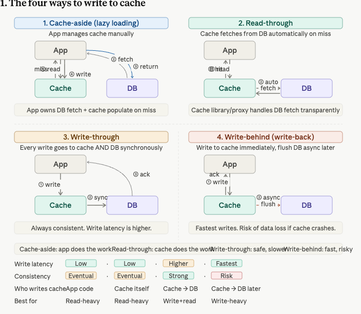
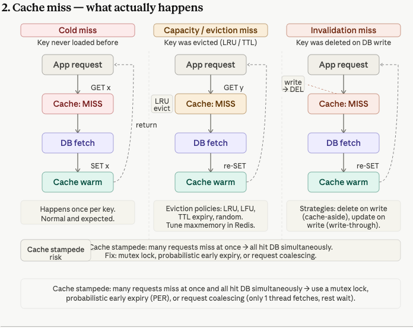
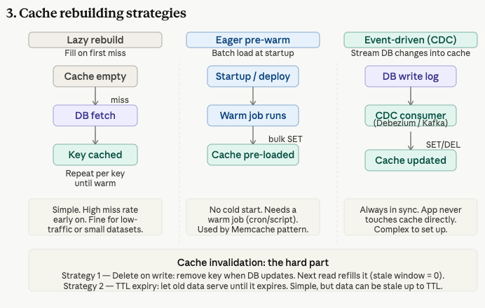
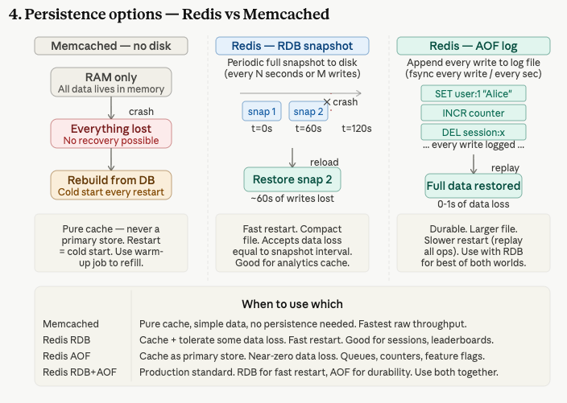
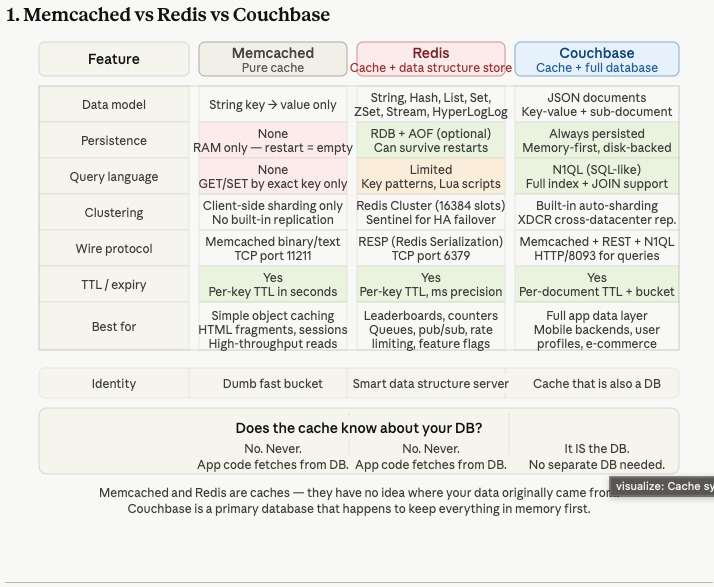
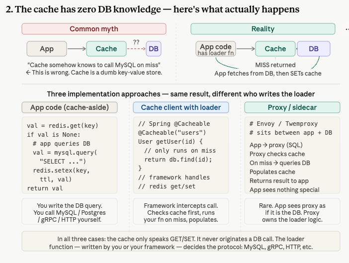
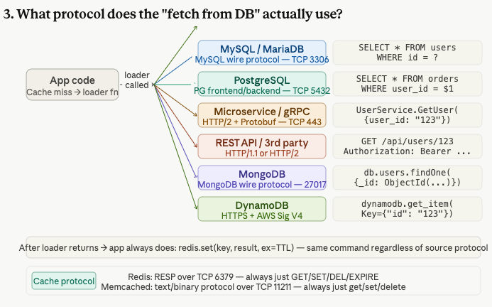
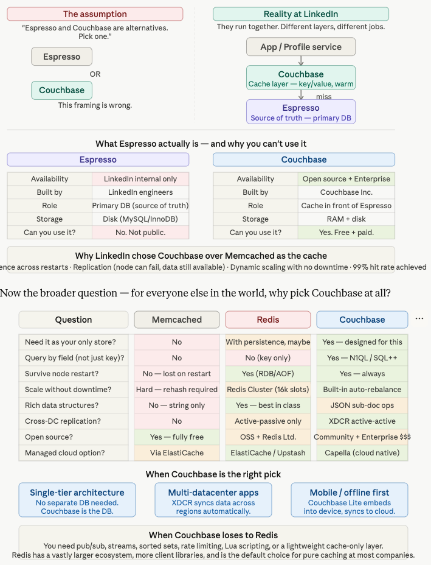
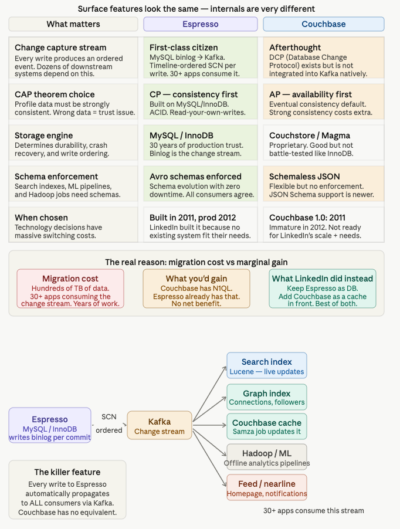

A deep dive into cache patterns, strategies, and systems — from bootstrap problems to LinkedIn's 4.8M reads/sec architecture
Many systems use two caching layers: a local in-process cache (populated via Kafka deltas) and a shared Memcache/Redis cluster. The question is why both are needed.
| Cache Type | Update Frequency | Update Method | Access Pattern |
|---|---|---|---|
| Local cache | Real-time | Kafka deltas | Every request (millions/sec) |
| Memcache / Redis | Every 30s | Control Plane batch write | Only at startup / warm-up |
How data gets into cache depends on who you want to be responsible. Different patterns offer different trade-offs between control, latency, and consistency.

When a seller updates a price on Amazon, the write goes to DB only. The cache still has the old price. If another user loads that product page in the next few seconds, they read from cache and see the old price — potentially at checkout. That's a real-world dispute.
Write-through says: before we ack the seller's save, we update both DB and cache atomically. The seller waits maybe 5–10ms more. But every reader from that moment on is guaranteed to see the new price.
The Rule of Thumb:
Write-through: When stale reads have real consequences — financial data, stock levels, surge fares, account balances. You accept the write cost because being wrong is more expensive than being slow.
Cache-aside/Write-behind: When approximate data is acceptable — view counts, likes, recommendations. Speed matters more than perfect accuracy.
Use when stale data causes real harm
Use when speed > perfect accuracy
Default pattern for most read-heavy data
Framework/proxy handles cache transparently
Ask: "What happens if data is stale?"
Ask: "What's the write volume?"
Cache miss is always the same three steps — detect miss, go to DB, populate cache — but the cause differs.

Only one request fetches from DB; the rest wait and then read the now-warm key.
Re-compute a cache entry slightly before it expires, rather than waiting for a hard miss.
Deduplicate in-flight requests for the same key so only one goes to the DB.
Rebuilding cache after a restart is the problem Memcache was solving. Different strategies offer different trade-offs between complexity and performance.

| Strategy | How it works | Stale window | Complexity |
|---|---|---|---|
| Delete on write | When DB is updated, delete the cache key. Next read refills it. | Zero — next read always fresh | Low |
| TTL expiry | Set a time-to-live on each key. Serve stale until it expires. | Up to TTL duration | Very low |
| Write-through | Write to cache and DB simultaneously on every mutation. | Zero | Medium |
| CDC invalidation | Watch binlog; delete/update cache key on every DB change. | Near-zero (stream lag) | High |
The fundamental difference: Memcached has no persistence, Redis offers two options. In production, you typically run both together.

| When to Use Which | Persistence | Data Loss | Restart Speed | Best For |
|---|---|---|---|---|
| Memcached | None | 100% on restart | Instant (empty) | Pure cache, simple data, no persistence needed |
| Redis RDB | Snapshots | Snapshot interval | Fast | Analytics cache, can tolerate some data loss |
| Redis AOF | Write log | 0-1s | Slower (replay) | Session store, queues, counters, feature flags |
| Redis RDB+AOF | Both | 0-1s | Good | Production standard - best of both |
Does the cache know about your DB? The answer determines your architecture and trade-offs.


| Question | Memcached | Redis | Couchbase |
|---|---|---|---|
| Need persistence across restarts? | ❌ No | ✅ Yes (opt-in) | ✅ Always |
| Need rich data structures (sorted sets, streams)? | ❌ No | ✅ Yes — best in class | ⚠️ Limited |
| Need a primary DB (no separate DB)? | ❌ No | ⚠️ With RDB+AOF, maybe | ✅ Yes — designed for this |
| Need to query by field value? | ❌ No | ❌ No | ✅ Yes — N1QL |
| Need cross-datacenter active-active? | ❌ No | ❌ No (active-passive) | ✅ Yes — XDCR |
| Ecosystem / libraries? | Good | Largest — de facto standard | Smaller |
| Raw throughput as pure cache? | ✅ Fastest | Excellent | Good |
Spoiler: it doesn't — the app does. The cache is a passive key-value store.
"Cache somehow detects a miss and automatically queries MySQL."
Cache returns NIL. Your app code (or your framework's cache library) detects the miss, runs a loader function you wrote, fetches from DB, then calls redis.SET to populate the cache.
| Approach | Who writes the loader | How it looks |
|---|---|---|
| Manual (cache-aside) | You — in application code |
val = redis.get(key)
if val is None: val = db.query("SELECT ...") redis.setex(key, ttl, val) return val |
| Framework (@Cacheable) | The framework — intercepts method calls |
@Cacheable("users")
User getUser(Long id) { // runs ONLY on cache miss return db.findById(id); } |
| Proxy / sidecar | The proxy — sits between app and DB | App sends SQL to proxy. Proxy checks cache → miss → queries DB → populates cache → returns result. App sees nothing special. |
The loader function in your app code uses whatever protocol the target database speaks. The cache is not involved — it only ever sees GET and SET on its own protocol.

After the loader returns: regardless of which DB and protocol was used, your code always calls the same cache command:
The cache only speaks its own protocol (RESP for Redis on TCP 6379, Memcached binary/text on TCP 11211). Everything else is your app's concern.
A real-world case study in why you need both — LinkedIn reaches over 4.8 million profile reads per second

